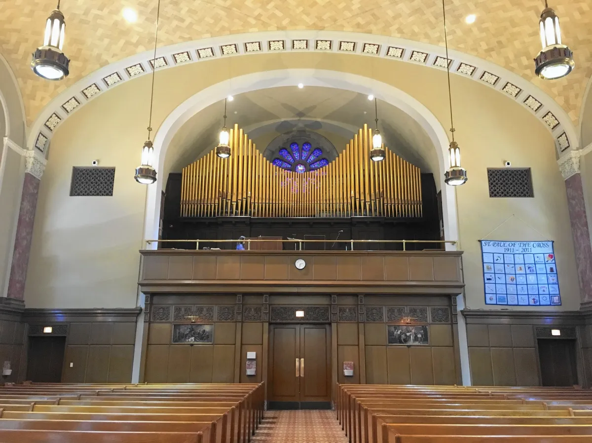

Explore our growing collection of virtual pipe organs.

Casavant Opus 1279, St Paul of the Cross, Park Ridge IL
Restored french organ from Sackville United Church

Romantic Organ
Warm, orchestral sound inspired by 19th-century symphonic builders.

Baroque Organ
Crisp, bright tones ideal for Bach and early music interpretation.